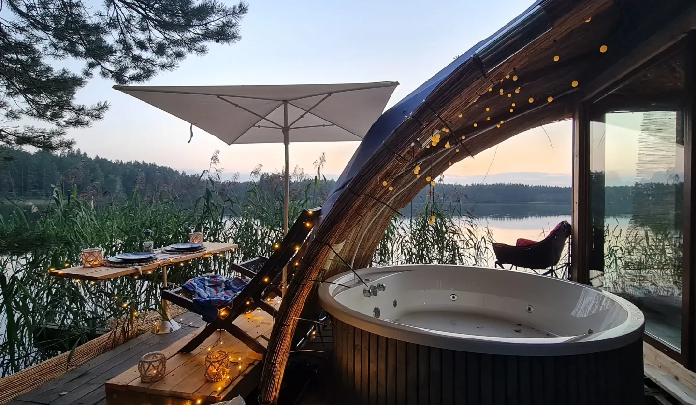
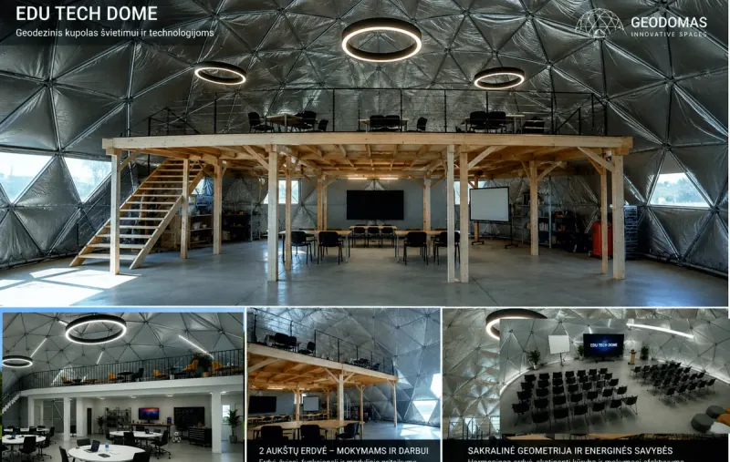
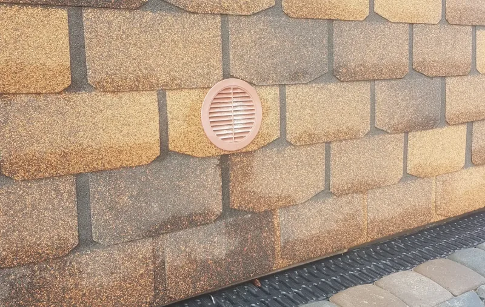
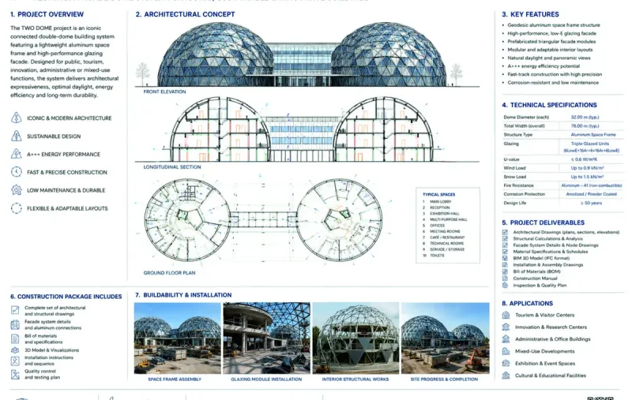
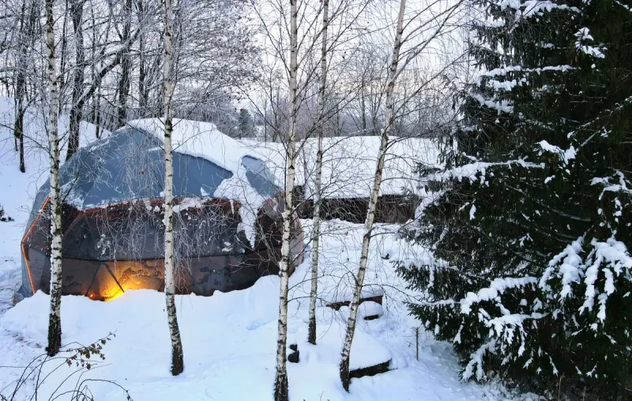

NATURE INSPIRES A BETTER WAY
GEODOMAS
Premium Dome Architecture
Glamping domes. Dome houses. Building-grade glass architecture.
One product system from first idea to the right technical route.
CHOOSE BY PURPOSE
Start with what the space must do.
Product family first. Exact model, technology level and engineering come next.

Glamping
Hospitality systems from compact stays to resort-scale concepts.

Dome Houses
Residential architecture from compact homes to signature villas.

Commercial & Glass
Building-grade glass, office, public and hospitality systems.

GEODOMAS AI
Describe the idea. Get routed to the right product and next step.
SUSTAINABLEless noise, more useful system
INNOVATIVEgeometry connected to product logic
PEOPLE-CENTREDstart from real use and experience
VERIFIABLEorientation separated from engineering approval
NOT SURE WHERE TO BEGIN?
Turn the idea into a Project Definition.
Define purpose, location, scale, product family, geometry direction, envelope and project scope before jumping into engineering or pricing.
GEODOMAS PRODUCT SYSTEM
Choose the system before the model.
The public knowledge layer is built from curated specialist knowledge. The route stays simple: understand the purpose, choose the correct family, then lock geometry, technology level, supply scope and project verification.
Product Academy
Understand families, differences, advantages and current public model routes.
Explore Academy → 02 · DEFINEStart a Project
Turn a concept into a structured Project Definition before engineering and supply.
Build your brief → 03 · CONTINUE LIVEGEODOMAS AI
Move from orientation into a live product and project dialogue with the full assistant.
Open Assistant ↗READY FOR THE NEXT STEP?